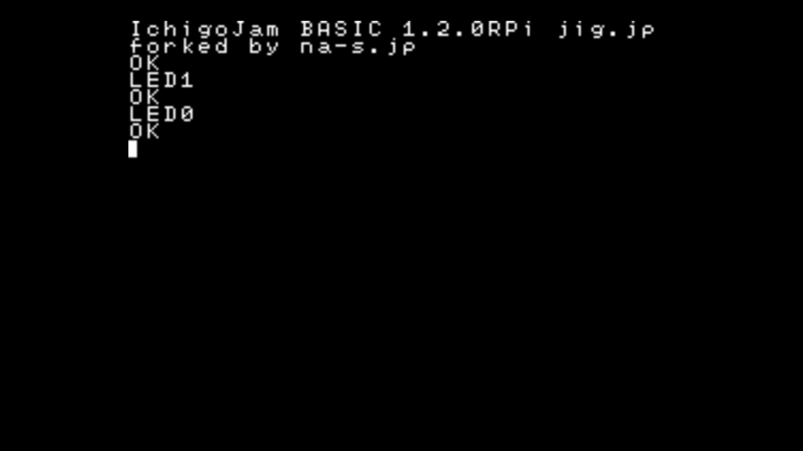

1. Terms of use
Agree to the Terms of use and download it. Distribution to third parties requires a contract.
2. Device compatibility
Compatibility is confirmed with the following devices.
- Raspberry Pi 3 Model B V1.2
- Raspberry Pi Zero V1.3
- Raspberry Pi 2 Model B V1.2
- Raspberry Pi Zero W V1.1
* The keyboard response of "Zero" and "Zero W" is not good for now.
However, Other than that, you can use those same as "Pi 3" and "Pi 2".
4. How to use
Installation
Format a microSD card with FAT32.
Copy contents of the directory including readme.txt to the microSD card.
Configure the default keyboard layout
To configure the default keyboard layout, edit keymap.txt.
| Text in keymap.txt | Keyboard layout |
|---|---|
| us | US layout |
| jp | Japanese layout |
* Changing the keyboard layout after startup is also available by using KBD Command.
(refer to the document below.)
Tutorial
I. Start IchigoJam BASIC

-
- Insert the microSD card into Raspberry Pi.
- Connect display device and keyboard.
- Connect USB cable to turn on the power.
If the screen looks like the one on the left, it's successful!
II. Turn on the LED

-
Input "LED1" from keyboard and press [Enter] key.
If the Activity LED (green one) on Raspberry Pi turned on,
it's successful!
III. Turn off the LED
- 
-
Input "LED0" from keyboard and press [Enter] key.
If the Activity LED (green one) on Raspberry Pi turned off,
it's successful!
IV. Blinking LED

-
- Input "10 LED1: WAIT30" from keyboard and press [Enter] key.
- Input "20 LED0: WAIT30" from keyboard and press [Enter] key.
- Input "30 GOTO10" from keyboard and press [Enter] key.
- Input "RUN" from keyboard and press [Enter] key.
If the Activity LED (green one) on Raspberry Pi blinking,
it's successful!
To stop blinking, press [Esc] key.
5. Differences from the original edition
IchigoJam BASIC RPi is ported based on version 1.2.3 of the original edition (LPC1114 edition).
The operation method and available commands are basically same as the original edition,
but the following points are different.
A Document of the original edition is here.
https://ichigojam.net/IchigoJam-en.html
Unimplemented key operations
Following key operations are not implemented in RPi edition
| Key | Reaction of the original edition |
|---|---|
| [Right Alt] | Switching Kana input mode(same as [kana]) |
| [Ctrl] + [Shift] | Switching Kana input mode(same as [kana]) |
| [Ctrl] + [Alt] | Switching insert mode(same as [Insert]) |
Key operations specific for RPi edition
Following key operations are implemented in RPi edition only
| Key | Reaction of the RPi edition |
|---|---|
| [Right Alt] + [K] | Switching Kana input mode(same as [kana]) |
| [Ctrl] + [Shift] + [K] | Switching Kana input mode(same as [kana]) |
| [Ctrl] + [Alt] + [I] | Switching insert mode(same as [Insert]) |
Unimplemented commands
Following commands are not implemented in RPi edition
| Command | Reaction of the original edition | Reaction of the RPi edition |
|---|---|---|
| VIDEO | Video/Display Setting | Do nothing |
| SWITCH | Change the Display | Do nothing |
| SLEEP | Enter to the system sleep mode | Do nothing |
| ANA | Return voltage of external input as a numerical value | Always returns 0 |
| BEEP | Sound beep | Do nothing |
| PLAY | Play music written in MML | Do nothing |
| TEMPO | Change the tempo of music being played | Do nothing |
| SOUND | If sound is playing, return 1 | Always returns 0 |
| USR | Call the Machine code | Do nothing |
Commands specific for RPi edition
Following commands are implemented in RPi edition only
| Command | Reaction of the RPi edition | Usage |
|---|---|---|
| KBD | Change the keyboard layout |
KBD 0 'Swicthing To US KBD 1 'Swicthing To Japanese |
* The numerical value returned by LANG and the numerical value set by KBD are different.
LANG returns the language number of the font to be displayed when enabling Kana input with IchigoJam in use.
(LPC1114 edition 1:Japanese, 2:Mongolian, 3:Vietnamese)
Etc.
In addition, there are following differences.
- If power is turned on without connecting the keyboard, FILE0 is automatically executed (LRUN0)
- Only PWM3 and PWM4 can be used for PWM Command
- IN3(OUT10) becomes a pull-up input with OUT10,-2 Command
- The cursor does not blink
- LED Command and OUT7 Command are independent of each other
- It does not correspond to the power saving mode of WAIT Command
6. IO commands and physical pin layout
The relationship between IN/OUT/PWM command and the physical pin
where the electric current actually flows is as follows.
| Physical pin | Input Command | Output Command | PWM Command | Initial state |
|---|---|---|---|---|
| 15 | IN1 | (OUT8) | Input(pull up) | |
| 13 | IN2 | (OUT9) | Input(open) | |
| 11 | IN3 | (OUT10) | Input(open) | |
| 7 | IN4 | (OUT11) | Input(pull up) | |
| 35 | IN9 | Input(open,fixed) | ||
| 37 | (IN5) | OUT1 | Output | |
| 36 | (IN6) | OUT2 | Output | |
| 33 | (IN7) | OUT3 | PWM3 | Output |
| 32 | (IN8) | OUT4 | PWM4 | Output |
| 38 | (IN10) | OUT5 | Output | |
| 40 | (IN11) | OUT6 | Output | |
| 26 | OUT7 | Output(fixed) |